-

孔子廟
日付： 2022/01/20
スタンプ注釈：
スタンプをきれいに押すことは難しい。結局、十回も同じスタンプを押してしまった。
-
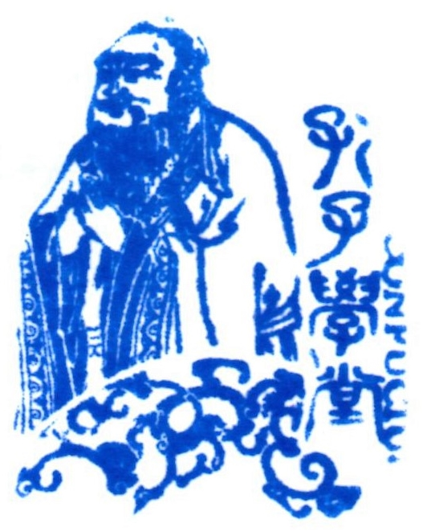
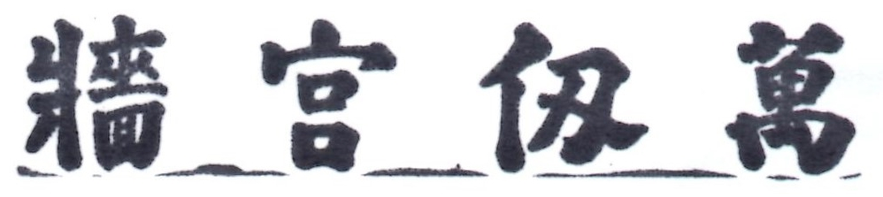
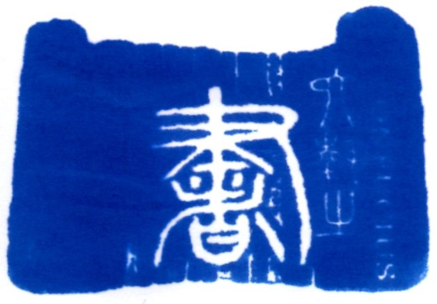
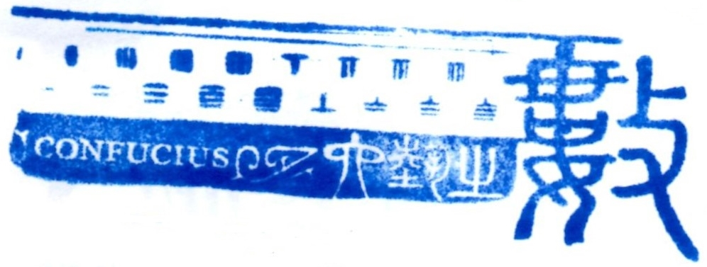
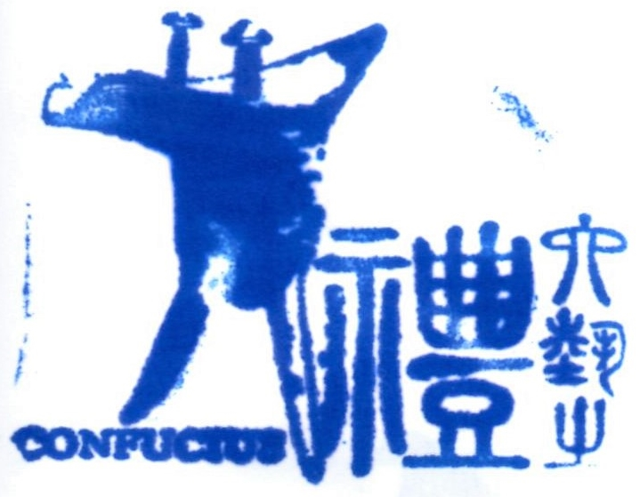
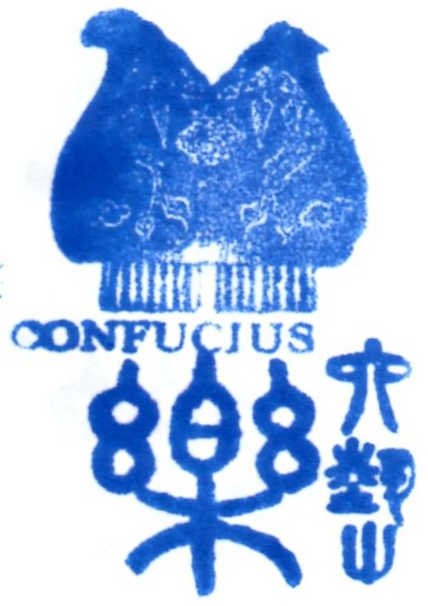
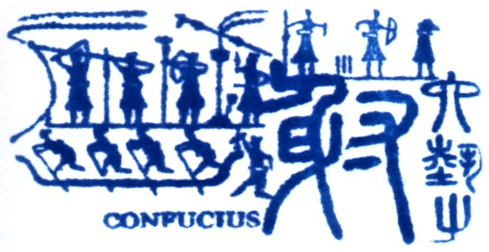
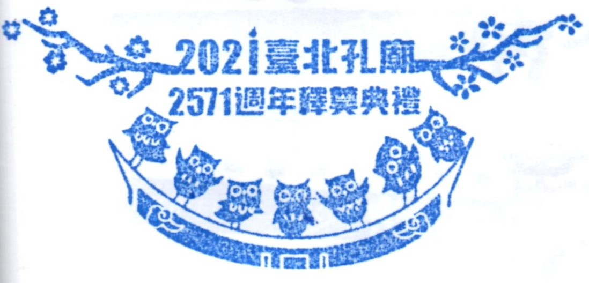
学校の根源
孔子は教育界の先駆者として、最初の私塾を創立していた。孔子廟の塀の上には「萬仞宮牆」の横額がある。というのは、孔子の学識は高すぎて学校にいかなければ、孔子の学識がどれぐらいの深さかを知らないことだ。また、隣の小さな公園の地上には論語の言葉が書いてある。小学校の時に論語を学んだことがあるけど、今にはほとんどの内容や意味を忘れた。逆に日本語で中国語の意味を理解できたのは泣くはずだか笑いはずだかと考えた。
行ったのは、台湾の大学試験の前日であった。孔子廟に試験の祈り活動が行われていた。試験の受験票があれば、活動に参加できる。残念ながら私はもう大学生になった…だが、隣に書道のお守りを書く活動が開催されている。書道の先生に新年の願いを書いてもらうと頼んだ後、お守りを持って大成殿に参拝に行った。殿内では参拝方法が放送されているけど、残念なことに中国語しかなかった。というわけで、参拝方法をご紹介する。まずは、大成殿に入る前に身だしなみを整えておく。次に、孔子の位牌に三回お辞儀をして、願いを孔子に知らせて一回お辞儀をする。これで、参拝のプロセスは完成する。
孔子は君子を培うために六芸を制定した。周りの部屋には、六芸が紹介されている。スタンプを収集しながら、孔子の思想や文化の発展を見学できる。見学するうちに、色々な知識が分かった。孔子廟は私が思っていたより面白かったんだね。


 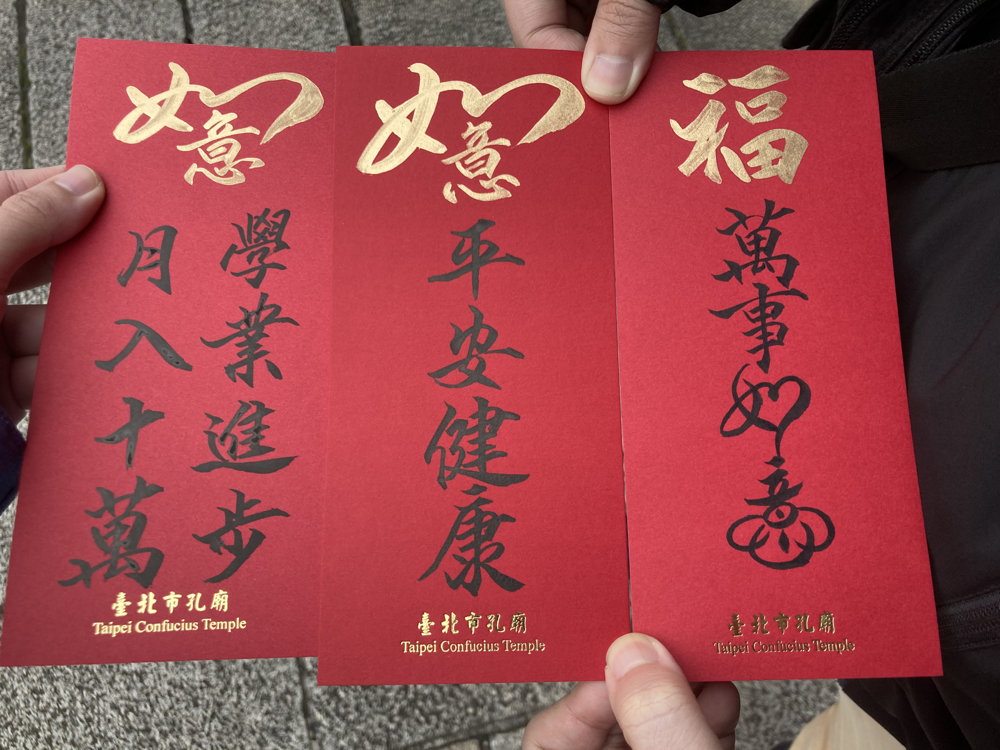
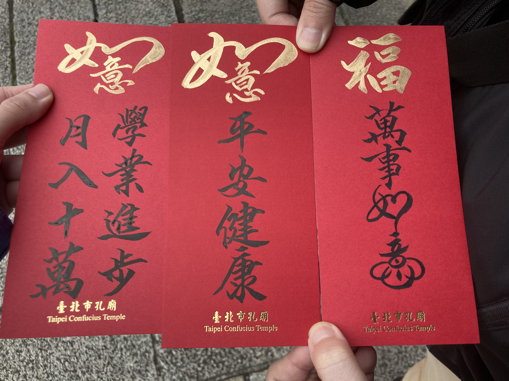
 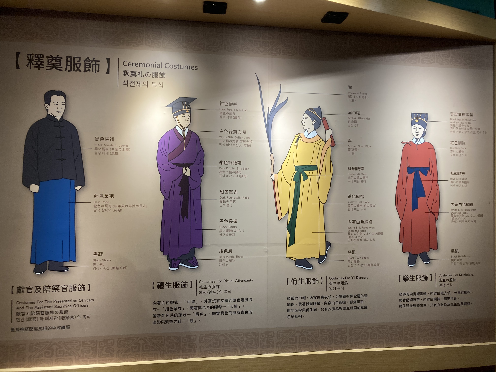
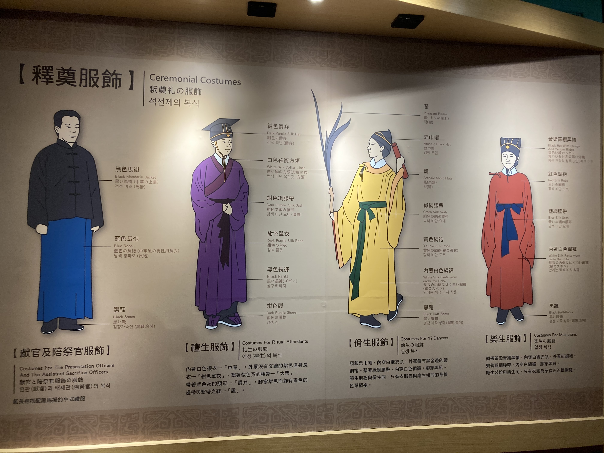

 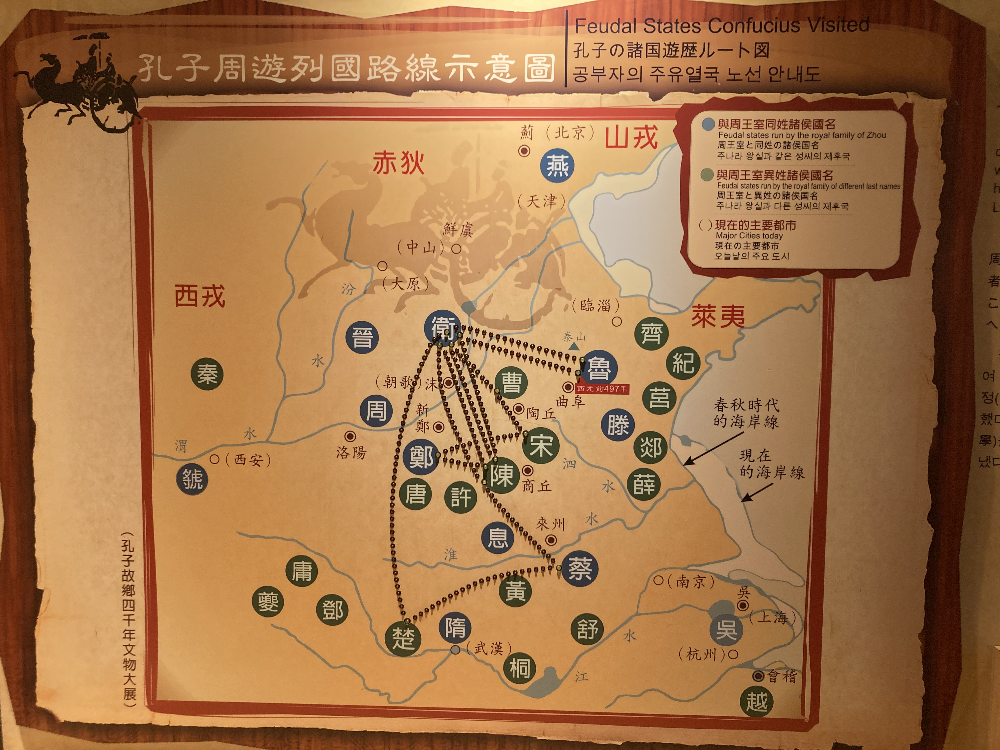
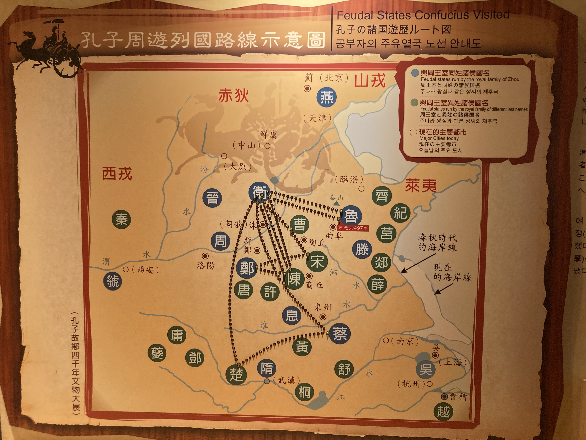